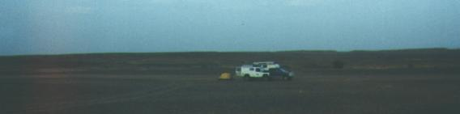

Hazy low cloud had built up, and we had no spectacular desert sunset. Sam slept in the back of Elsa, and I got into my sleeping bag in the tent with Abbie. The night was warm - but not humid - and I soon had to unzip my bag and slept under it. I was tired, and hoping for a good nights sleep before we pressed on the next day. Passing traffic was probably not a problem, but I expected we might hear one or two cars or trucks pass in the night.
At about midnight, I heard a low rumbling in the distance. It sounded like a vehicle. It was faint, but getting louder. I must have been sleeping lightly. My expectation was that it would get louder, and then in a roar and a glare of headlights, would pass us by. But it was taking its time.
I looked out through the mesh of the tent and could see nothing back along the track. Then I noticed that the tail lights of our Land Rover were on, and Sam was outside. The noise in the distance stopped. I got out of the tent and walked over to Sam.
It was quiet. Sam signalled for silence. I could hear nothing. The sky had cleared partly, and a near-full moon was lighting up the desert landscape from a low angle. Sam hopped back into the front and switched the lights off.
"What's up?", I asked. "I don't know.", he said. He had heard the noise of the vehicle in the distance and got up to see what was going on. From the top of the Landy, using binoculars, he could just about make out a vehicle in the distance. He had put the lights on so that they could see we were here. And that was when they stopped.
We discussed theories. Gun runners taking weapons to Algeria. When they saw our tail lights they thought we were police, or army. So they'd stopped.
I grabbed my binoculars and scanned the far hills of the barren landscape. Nothing. Sam directed me. Left of that hill. Right of that bush. We could hear faint voices, becoming louder, and more agitated. Then suddenly there was a series of silent bright flashes, lighting up the sand, and then, delayed by the distance, the sound of automatic gunfire hit us.
A number of thoughts went through my head in an instant. Wake Abbie, wake Mike and Carol, get everyone in the Land Rover and get out of there. Leave the tent, leave the Nissan, run like hell. But things unfolded all too quickly in my binoculars.
Almost immediately two headlights shone out and we heard the engine being stretched to its limit. The vehicle started off towards the south, and we watched it quickly disappear behind a hill. The sound became a low rumble, and it faded off into the far south, towards the Algerian border.
We decided to head back to the spot where the action had occurred, so we jumped into the Landy and headed down the track, headlights on full. It took us about five minutes to find the spot. A man lay across the track. Sam slammed on the brakes and we stopped and kicked up a plume of dust into the headlights. We jumped out, but it was obvious there was nothing we could do for this young arab. He was lying in a pool of blood, and was very dead.
We listened again. Silence. Sam picked up a couple of empty rounds from the desert, and identified them as being from a Russian rifle of some sort. For a moment we had no idea what to do next. We were a good day's drive from the nearest village, and there might be no other traffic through here for days or weeks. We couldn't take this man with us, and we couldn't leave him out here in the desert. We had already seen eagles and vultures, they would make short work of him. So we decided we had to bury him here.
We took the spades from the Land Rover and dug into the soft sand. I took my compass and made sure the hole pointed towards Mecca. We wrapped him in a blanket, and gently placed him in the ground. I read a few words from my English translation of The Koran. We filled in the hole. I took a map reference from my GPS so we could tell the authorities once we'd reach civilisation, although I doubted if they would have much sympathy for a religious extremist gun-runner. But to us, he was just another desert traveller.